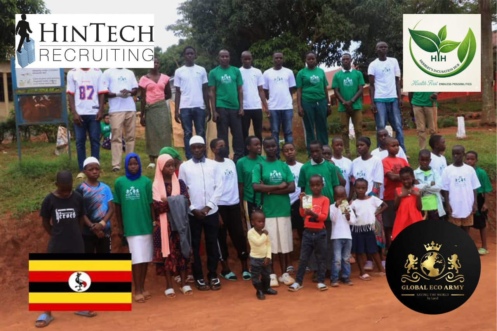

Projects & field work
Ideas made visible.
Products, infrastructure and community action are where the HIH model becomes tangible.
This portfolio presents the working areas documented in HIH’s supplied project material.
01 / Value addition
Waste to Wellness
Avocado seed recovery and product development
HIH collects avocado seeds that would otherwise enter the waste stream and explores value-added uses through drying, processing and product development. The work includes bio-powders, functional herbal teas and possible cosmetic ingredients.
Reunion Avocado Seed Powder is a visible product emerging from this circular approach.

02 / Water security
Muduma–Mpigi corridor
Water-source and drainage restoration
Herbert Skills Water Restoration addresses damaged or vulnerable water infrastructure through well desilting, water purification, stone-masonry drainage work and erosion control.
The programme connects access to cleaner water with longer-term protection against runoff and flooding.

03 / Agriculture
Managed production
Commercial livestock operations
Layer poultry and piggery operations form part of HIH’s commercial agriculture work. The operating model emphasises feed and health schedules, bio-secure housing and integration of organic manure into agroforestry.

04 / Community
Restoration through participation
Agroforestry and environmental campaigns
HIH’s community work brings tree planting and land rehabilitation together with training and youth participation. Sports-led campaigns provide another route for mobilising people around environmental action.
